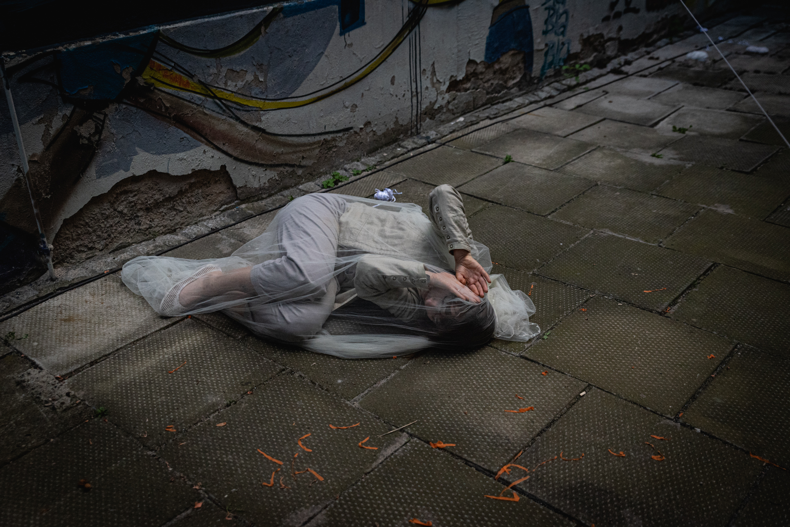
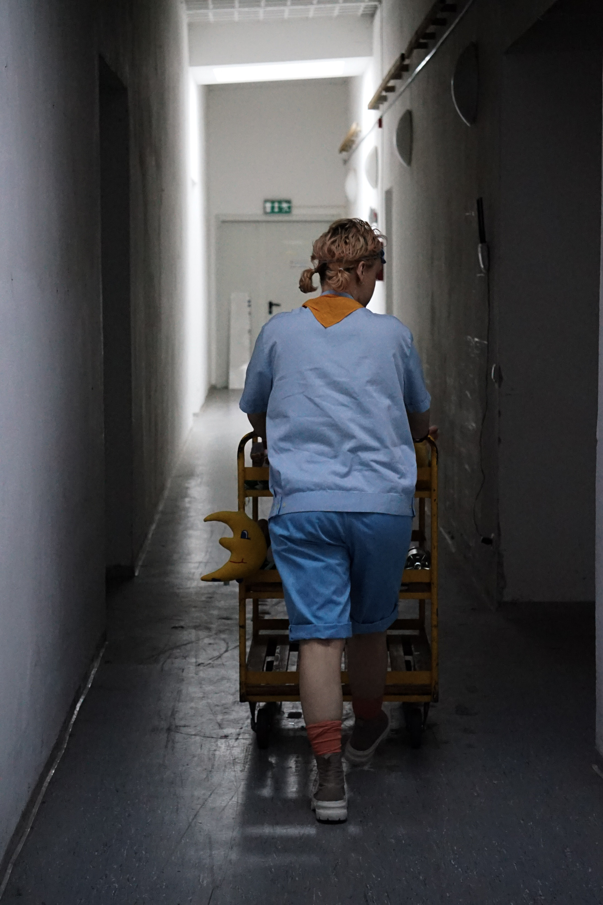
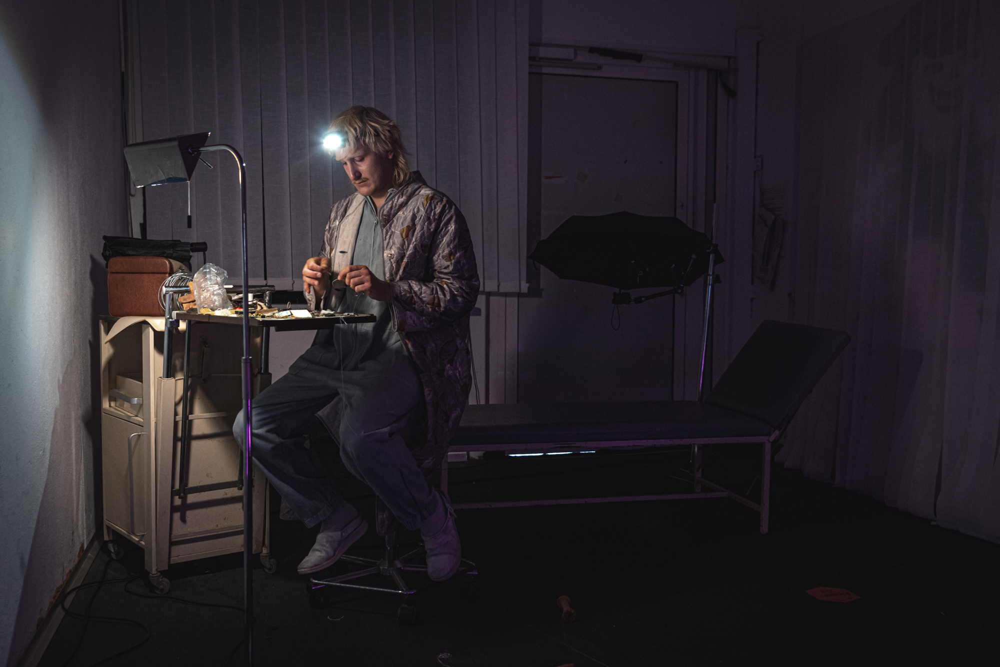
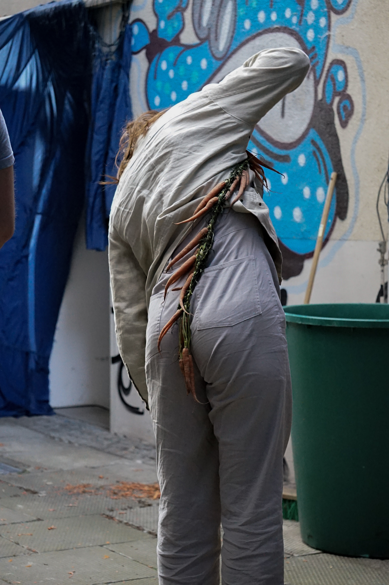
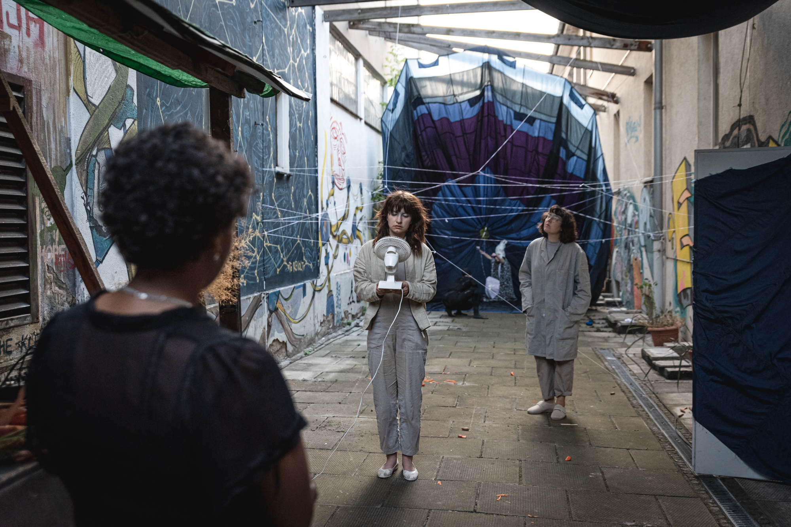
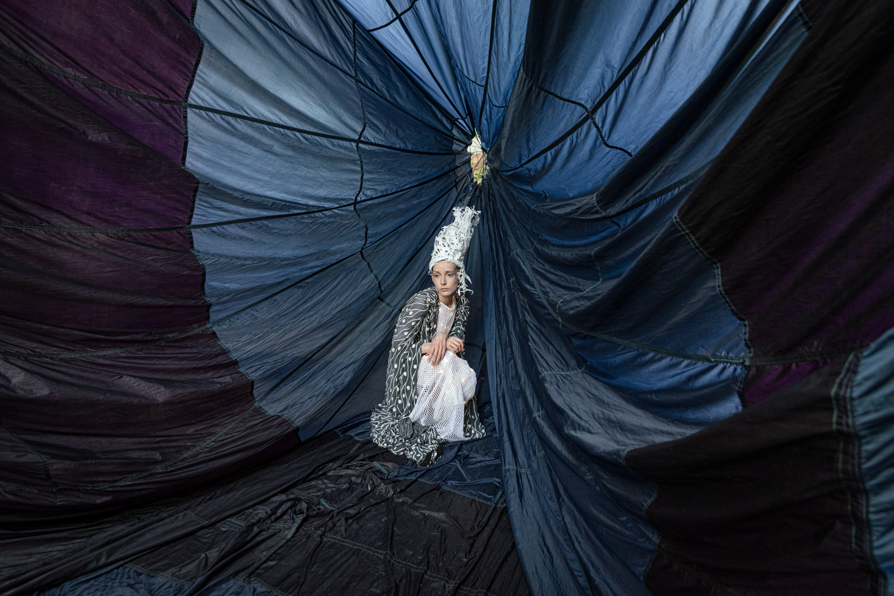
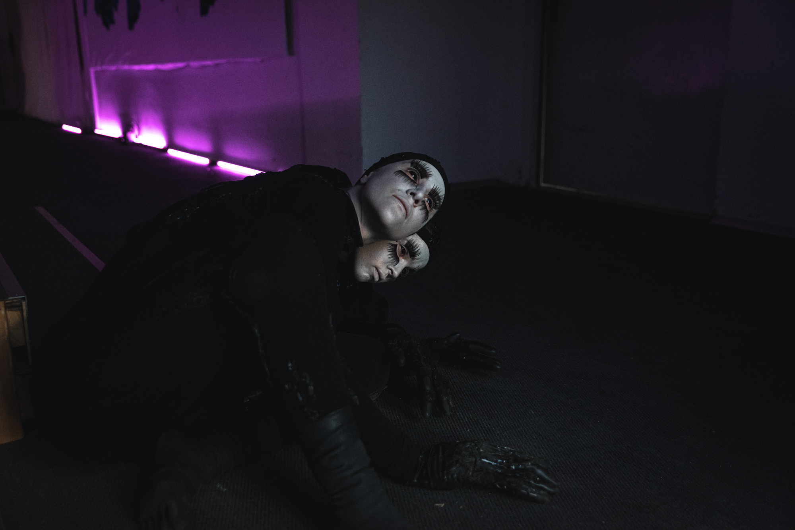
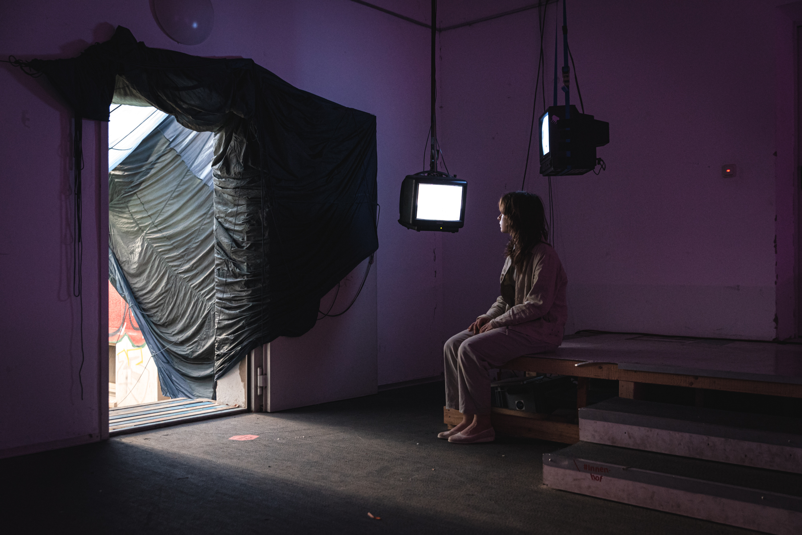
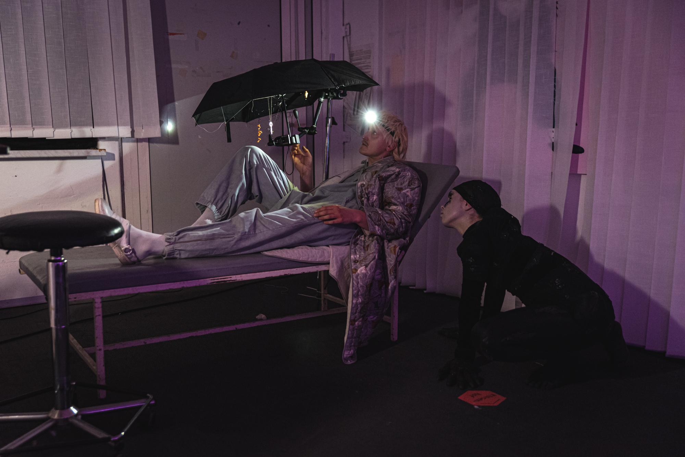

Performance
NACHT DER ONEIRONAUTEN
Rosenwerk, Dresden 2023
Nacht der Oneironauten war eine freie Performance im Rosenwerk Dresden. Neun Performer*innen entführten das Publikum an zwei Abenden in eine immersive Traumwelt. Inspiriert von Klarträumen, Mythologie und Schlafphänomenen begegnete man wandelbaren Gestalten, Nachtmahren, Urania und dem Sandmann – eine sinnliche Reise zwischen Wachsein und Traum.
- 
- 
- 
- 
- 
- 
- 
- 
- 
×

❮
❯
Idee & Impuls
Konzept, Bühne & Kostüme
Pauline Malack, Julia Scholz, Hanna Zeyer, Zina Bluhm, Marie Göhler,Maria von Knobelsdorff, Sophie León Pellegrin, Tom Schellmann, Mathilde Göhler
Maske
Lea Flechtner
Sound
Sophie León Pellegrin, Pauline Mallack
Video
Zina Bluhm
Technik
Aaron Reuter, Jakob Reck, Friedrich Weise
Helping Hands
Tade Jensen, Martin Fischer, Anna Betsch, Anna Seidel, Justus Splitt, Luis Schwarzenberger
Guide
Pauline Malack
Sandmann
Nachtmahre
Julia Scholz, Hanna Zeyer
Gefäße
Zina Bluhm, Marie Göhler
Urania
Mathilde Göhler